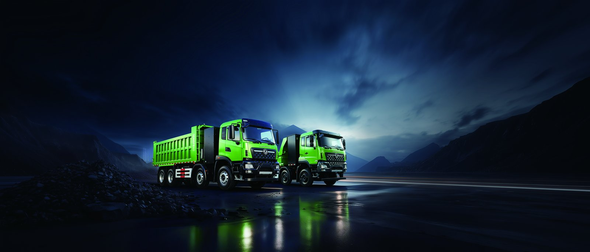

The Saudi Red Sea Project and the adjacent AMAALA destination are the most ambitious luxury-tourism developments on the Arabian coast, and both are being built under an explicit zero-emission construction mandate. Contractors on these giga-projects cannot simply roll diesel earthmovers and mixers onto site; the developer’s sustainability standard requires that the majority of on-site material movement be electrified, measured and reported. For fleet buyers serving these contracts, that turns the procurement decision from a cost question into a qualification question. This article explains how the Dongfeng TZ5E 6x4 electric dump truck and the KT9X electric mixer meet the mandate, and how they pencil out against diesel under Saudi energy prices.
The Red Sea destination spans more than 28,000 km² of coastline, islands and desert interior, with resorts, an international airport, a renewable-powered utilities backbone and hundreds of kilometres of access roads. AMAALA adds a further luxury wellness and marine-tourism corridor to the north. Both sites are off-grid or partially renewable-fed, and the developer has committed to operating them on 100% renewable power. A diesel truck fleet would undercut that commitment at the exact moment the asset is being certified. Electrifying earthworks, aggregate haul and concrete delivery lets the contractor claim a genuinely clean site and avoid the carbon and local-emission accounting that diesel fleets trigger.
The mandate is also practical. Coastal construction in this region runs through 40-48 °C summer peaks, and enclosed or semi-enclosed haul roads, underpasses and tunnel sections concentrate diesel exhaust into a worker-safety problem. An electric truck in Saudi service produces no NOx, no particulate matter and almost no noise, which simplifies site ventilation and night-shift community relations on a development that borders protected marine habitats.
The TZ5E is a 6x4 rigid electric dump truck built for the short, heavy, return-to-base duty cycle that defines giga-project earthworks. Its 396-400 kWh CATL LFP battery sits in the size class that carries a fullPayload of aggregate or spoil while leaving margin for air-conditioning load in summer. The LvKong permanent-magnet motor delivers 282-350 kW of continuous power with full torque from standstill, which matters on the soft, graded haul roads typical of a coastal site where a diesel truck would lose traction hunting gears.
Real-world range on a loaded 4-8 km pit-to-tip loop is 140-180 km per charge, enough for a full shift with a mid-shift DC top-up. The 20-80% DC charge lands in 45-60 minutes at 350 kW, which fits naturally into the operator’s meal and shift-change windows. Battery swap is offered on the TZ5E variant for fleets that run two shifts and cannot spare the charge window.
Concrete is the other half of the construction-emissions problem. The KT9X electric mixer carries the same LFP battery philosophy into a 9-12 m³ drum application, with a separate high-voltage motor driving the drum so rotation continues regardless of truck speed. That decoupling is a genuine advantage on a site where a mixer can idle for 30-60 minutes at a pour while a diesel engine would burn fuel and pump exhaust into the work face. The KT9X draws drum power from the traction pack, and its regen recovers energy on the empty return run to the batch plant.
Together the TZ5E and KT9X let a contractor run an essentially diesel-free earthworks-and-concrete cell: aggregate haul, spoil removal and ready-mix delivery all electrified, all charged from the same on-site renewable or grid connection the developer already provides.
| Parameter | TZ5E 6x4 Electric Dump | KT9X Electric Mixer |
|---|---|---|
| Battery | 396-400 kWh CATL LFP | 350-420 kWh CATL LFP |
| Motor | LvKong 282-350 kW | LvKong 260-350 kW |
| Loaded range | 140-180 km / shift | 120-160 km / shift |
| DC charge 20-80% | 45-60 min at 350 kW | 50-60 min at 350 kW |
| Battery swap | 5-6 min (swap variant) | Optional swap |
| Warranty | 8 yr / 4,500 cycles to 70% SOH | 8 yr / 4,500 cycles to 70% SOH |
| FOB price band | US$105,000-125,000 | US$115,000-140,000 |
Saudi diesel retails around US$0.20-0.32 per litre after recent reforms, while industrial and contractor electricity runs roughly US$0.08-0.13 per kWh where a renewable or bulk supply is available. A diesel 6x4 dump burns 0.45-0.60 L/km on a loaded haul loop; at US$0.28/L that is US$0.13-0.17 per km. The TZ5E consumes 1.4-1.8 kWh/km; at US$0.11/kWh that is US$0.15-0.20 per km — close on energy alone. The decisive gap is maintenance: no engine, transmission, DPF or diesel exhaust fluid, and brake wear cut by regen, saves an estimated US$0.06-0.10 per km. Add the carbon and local-emission accounting the developer would otherwise charge back, and the EV truck reaches parity or better inside the project timeline.
Red Sea and AMAALA sites sit far from established grid infrastructure, which is precisely why they are renewable-first. A contractor deploying the TZ5E pairs it with a solar-and-battery depot charger: the site’s own renewable generation feeds a 350 kW DC unit, and the truck charges during low-demand windows. For two-shift operations, the 5-6 minute battery swap variant removes the charge gap entirely; a single swap cabinet serves a fleet of TZ5E trucks with a small pool of packs. Either way the truck draws from the same clean supply the developer counts toward its 100% renewable claim.
Dongfeng EV trucks are exported worldwide by Shaanxi Fenghan Trading Co., Ltd, an authorized exporter based in Xi’an. For Saudi giga-project contractors we provide left-hand-drive 6x4 and mixer configurations, GCC climate package with upgraded cab A/C and battery thermal management, spare-pack leasing, and remote telematics commissioning. The Saudi Arabia market page covers import documentation, SABER conformity and logistics through Dammam and Jeddah. Contact us with your haul-loop distance and shift plan and we will model the exact TCO for your Red Sea or AMAALA package.
Site safety and productivity gains reinforce the financial case. A diesel dump fleet on a coastal giga-project adds exhaust, noise and fire risk inside confined haul tunnels and underpasses, forcing extra ventilation plant and slower cycle times during enclosed works. The TZ5E removes those constraints: no diesel fumes in the work face, near-silent operation that lets crews hear warnings, and no flammable fuel stored on the haul road. Contractors report fewer heat-illness incidents because cabs and the pit environment stay cooler without idling engines, and the developer’s environmental auditors accept the EV truck fleet as a measured zero-emission cell rather than a diesel fleet requiring offset accounting. For a multi-year package the combination of lower ventilation capex, faster enclosed-section cycles and cleaner audit status often exceeds the energy saving on the ledger. We commission the trucks with on-site telematics, train operators in electric haul discipline, and supply a spare-pack and motor service plan so the fleet stays available across the full construction programme.
Ready to electrify your fleet? Contact Shaanxi Fenghan Trading — authorized Dongfeng EV truck exporter. WhatsApp: +86 153 1943 1311 | Email: sales@fenghan-trade.com | dongfengevtrucks.com
🌐 Our Network: Fenghan Trade (SAGMOTO/SHACMAN Truck Export) · heavy duty mining dump truck 6x4 8x4